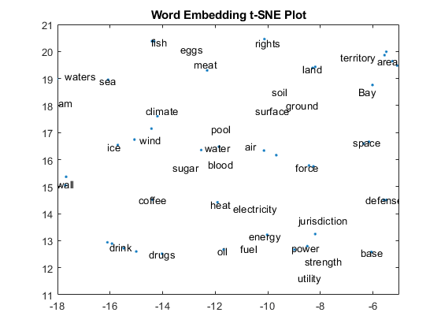
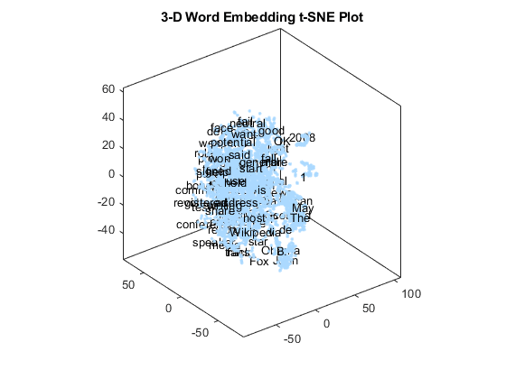
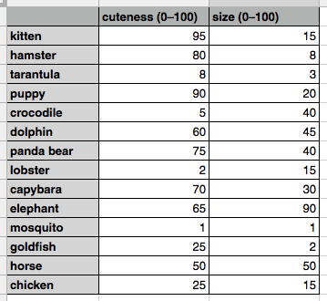
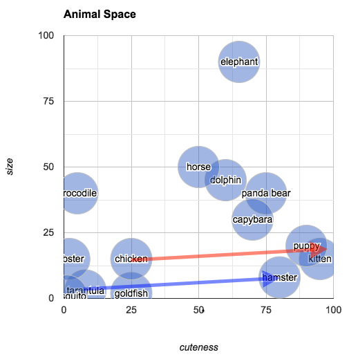

"I will give you a word. Make a sentence with a series of words whose first letters sequentially compose my word. Your sentence doesn't have to have a strong semantic connection with the word I give you.
Here're some good examples:
Cake - Creating amazing kitchen experiences.
Fire - Fierce inferno razed everything.
Smile - Some memories invoke lovely emotions.
Here's a bad example:
Abandon - Alice abandoned
her plans to move to the city when she realized the cost of living was too high.
Now make a sentence for /WORD/.
According to our rules, there should be /N/ words in your sentence. Your response should only contain the sentence you make. "
Above is a prompt I wrote for the large language model GPT 3.5 Turbo--one may have been the most advanced language model, but its position will soon be replaced by its descendant, GPT 4--who responded to me with a sentence for each word
I gave it. As per my instructions, GPT should produce sentences in a way that results in the combination of the initial letter of each word composing my original words. Thousands of word-sentence pairs like this eventually formed this project--
Lecsicon: Linguists Enthusiastically Catalog Symbols, Interpreting Carefully Occurred Nuances,
both in the format of a website and a physical book.
The name of the project implies its mechanism: an
acrostic. However, instead of producing a poem, the model is tasked with generating a single sentence for each word,
hence the room for creativity is largely restricted by the specific number of words. The language model, once again, beated humans in its efficiency. As I sent a list of words along with the prompt to ChatGPT, it responded to me in seconds with
a list of sentences it generated, although the accuracy was not guaranteed. Sometimes there are one or two extra words in the sentence, or in extreme cases the language model just went on and on in the hope to make the sentence complete, creating
sentences like "in moments of adversity, great minds always conjure intricate tales, inspiring new and unique, ambitious notions" for the word "imagination". Upon receiving the responses, I use a snippet of code to split them into the 'correct'
group and 'incorrect' group. Out of 4830 fetches, I got 882 results that strictly followed the rules.
Inspired by experimental writers such as the
Oulipo group
and their works, more specifically,
Alphabetical Africa by Walter Abish and
A Void by Georges Perec,
this is an attempt of constrained writing in collaboration with ChatGPT, a machine learning language model. From a number of entries, what we can see in Lecsicon is the model's efforts of trying to tie the sentence back to the meaning of the original
word, although my prompt has clearly stated that the output sentence "doesn't need to have a strong semantic connection with the word".
And it's not a coincidence that the model made sentences that are relevant to the original word. Closely examining the failed attempts, one can almost tell the model's struggles trying to fulfill the rules while making the sentence grammatically
correct and semantically coherent. It is a deliberate calculation and balancing process of the model to capture words and put them into a sentence, based on the words' relations to each other. And perhaps that's why we find a lot of entries intriguing,
such as "Music: Many unexpected sounds indicate creativity", "Date: Dinner and theater experience", or "Language: Learning another never gives us a greater experience" (damn, this is so good).
Syntax and Semantics
Language games such as acrostics or anagrams certainly have an allure that captivates people like me, because there is a hidden layer behind the simple switch and swap of letters. Making sense--in some instances of anagram, from 'listen' to 'silent',
from 'gentleman' to 'elegant man', the resulting words convey relevant meanings to the original ones and reveal new perspectives. Making sense also differentiate letters from random symbols or doodles, and this communal experience to make sense
of symbols we call a language. Lecsicon is only made possible by the fractal feature of the English language: letters, words, sentences, paragraphs, passages. Acrostics play with letters and words as well, but on a slightly larger scale.
Definitions and Relationality
Dictionaries are human inventions that “lists the words of a language and gives their meanings” (this definition is drawn from the Oxford Languages dictionary). What we do in dictionaries is to use other words to elucidate a given word--a definition of
a word only exists in relation to other words that define it. Now, in large language models, the idea of “definition” or “meaning' dissolves, and is replaced by words in the form of vectors mapped into high dimensional spaces. Any word in such
a space is nothing but the linguistic association with it, based on statistical computation of the patterns of the text we produced.




Constrained writing is particularly interesting with computers because they are the best to execute strict, clear binary rules. I'm going to quote Charles Hartman in
Virtual Muse: Experiments in Computer Poetry:
Language models offer childish pleasures…the wickedness of exploding revered literary scripture into babble. […] Here is language creating itself out of nothing, out of mere statistical noise. As we raise N, we can watch sense evolve and meaning
stagger up onto its own miraculous feet…(He is talking in the context of the Markov chains.)
GPT 3.5 only succeeded in one fifth of the tasks. It surely will get better with GPT 4. Now that we have a tool that can create non-exhaustive textual content that we can spend our lifetime reading, what do we do with it? Pioneers in
computational writing has come to this realization long ago--in his 2011 book
Uncreative Writing: Managing Language in the Digital Age, Kenneth Goldsmith bluntly nailed
the issue down at the very beginning: “‘The world is full of texts, more or less interesting; I do not wish to add any more.’ It seems an appropriate response to a new condition in writing today: faced with an unprecedented amount of available
text, the problem is not needing to write more of it; instead, we must learn to negotiate the vast quantity that exists. ” If language can be seen as a material, text should be not only produced, but also manipulated, repurposed, patchwritten,
and sampled.
Lecsicon is an attempt to dig into the form of language and the motivation of large language models. The output might come out hilarious or playful, and the intention of creating this piece was never serious. Have fun reading!
Notes:
1. Holes on the Map
What might also be worth mentioning is the nonword lecsicon that has not been published. As its name suggests, nonword lecsicon is a list of word-sentence pairs with made-up words that were created based on lexical features of English, sourced
from
The English Lexicon Project dataset. The GPT model did a fairly good job is this task:
Athorred - Ants tirelessly hauling objects, relentlessly roaming every day.
Achorrent - Alligators can hold oranges, reaching rare edible nuts tenaciously.
Avides - Artistic visionaries inspire diverse, expressive scenes.
Arides - Adventurous raccoons investigate deep, elusive spaces.
Ahiding - Agile hares idly dart in narrow gardens.
Abigoul - Artful butterflies indulge gracefully on unique leaves.
Afility - Ancient frogs inhabit lily pads intranquil yards.
...
Isn't it compelling and worth pondering, the reason why GPT can generate sentences that perfectly satisfy the rules for non-existing words?
2. On the index page of the website, an image generated by Midjourney is displayed along with the list of entries. The image is a blend of
this,
this, and
this, drawing ideas from visualizations of word2vec embeddings.
3. The output from non-words will be published soon, stay tuned!